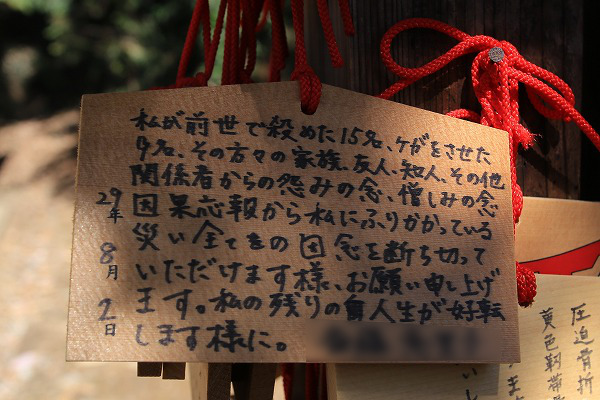

栃木県足利市。御存じ足利氏ゆかりの地であり、足利学校や鑁阿寺に代表される歴史のある街だ。
近代では繊維産業が栄えた産業都市でもある。
そんな歴史と産業の街、足利にあるお願いスポットをオムニバスでお届けいたしますよ。
大手神社
足利市街の西にある大手神社。
かつてはすぐ近くに競馬場があったが今では消え去り、随分様子が変わってしまった。
そんな大手神社だが、神社自体はごくごく小さく、社殿といっても御覧の社だけ。
社の前には絵馬がぶら下がっている。
その多くは
手を広げた絵柄の絵馬。
手に関するお願い事に御利益がある神社なのだとか。
願い事を見るとピアノが上達しますように、とか腱鞘炎が治りますように、とか。とかく手に関する願い事ばかり。
言い伝えによると、この神社は
平将門の手が飛んできた場所だとか。
朝廷に反乱を起こし、京都でさらし首にされたという将門が故郷である東国に飛び去ったという伝説は各地に伝わっている。
特に東京の神田明神や将門首塚が有名だが、ここ足利にも将門飛来伝説が残っている。
朝廷から見たら反逆者だが、関東では将門にシンパシーを憶える者は少なくない。
その将門の手にあやかって人々は祈りを捧げるのだ。
拝殿の中には五股の木や手型の絵馬などが奉納されている。
将門信仰が同じく日本三大悪人の足利尊氏のルーツである足利市にあること自体が何か歴史的な意図を感じざるを得ない。
ついでに言えば将門の首塚の所在が東京の大手町なのもこの神社との関係があるようなないような…。
2006.07. 2018.03.
水使神社
お次は大手神社の少し北にある水使神社。
ここは
婦人病に霊験あらたかな神社として名を馳せている。
拝殿前にはゴチャゴチャと色々なものが奉納されている。

中央には絵馬。
左右には布モノ。
涎掛けは子宝祈願や子供の健康祈願、腰巻や下着は婦人病快癒の祈願と考えられる。
これが伝統的な婦人病平癒の祈願絵馬。
拝殿脇には銀杏の木の立派な気根が。
銀杏の気根はその垂乳根のような姿から豊乳の信仰対象となっている。
これもまた女性の神様にふさわしいといえまいか。
この神社の祭神はイソ女水使権現。イソという女性なのだ。
説明版によれば
出流原弁天(磯山弁天）の申し子、イソの子供が近くの淵で溺れ、それを助けようとして親子ともに亡くなってしまった。
その後、この淵では異変が起きたという。
そこでイソを水使権現として祀る事となったのだとか。
そして今では女性、母の信仰を集めているというわけ。
ところでこの水使神社、春と秋に大祭がある。
春の大祭に行ってみた。
大祭、とはいえ元々がマイナーな神社。
規模もそこそこな感じでした。
手水にチンチン…。
普段は誰もいない神社だが、この日ばかりは氏子や参拝者が多く訪れていた。
普段は宝物堂という名のプレハブ小屋に収蔵されている「お宝」もこの日は堂々と人の眼に触れる場所にチン列されている。
木の股を利用した女性の下半身。
これ見よがしに赤い布が捲られている。これも大祭ならではのサービスなのか。
何だか凄い組み合わせですね。
天然…なのだろうか？
うむー。
普段は拝殿前にある奉納物もこの日はまとめて片隅に。
腰巻に混ざってブラも。
宝物堂には様々な奉納物が並んでいる。

そのほとんどがセクシュアルなもの。
絵柄が昭和っぽいですね。
チンチンがチンチンを持つシュールな逸品。
拝殿の奥にはイソ女水使権現の絵が掲げられていた。
神社の前には小さな川が流れていて、数百メートル先で渡良瀬川に合流している。
ここでイソさんは溺れたのだろうか？
2006.07. 2014.04. 20.18.03.
門田稲荷
最後に訪れるのは門田稲荷。
ある意味
本邦最恐の神社ともいえよう。
門田稲荷は足利市街の南、下野国一社八幡宮の境内にある。
小さな神社だが、その周辺には大量の絵馬が奉納されている。
ここは縁切りにご利益がある神社なのだ。
縁切りといえば男女の仲と思われがちだが、実際のところは
職場の人間トラブルや学校のいじめに関するものが多い。
中にはいじめを見過ごした教師への恨み辛みやいじめた側の親が教師を恨んだりするケースもあって、先生って大変。
とにかく「死ね」という文言が多い。縁切り祈願なはずなのに…。
中には同じ人物の死を願う絵馬が何枚も何枚も掲げられていたり、クラス全員の死を祈願したり。
人の心の闇が具現化されるというのはここまで凄いものか、と思わざるを得ない。
絵馬と一緒に穴の開いた柄杓も奉納されていた。
普通、穴の開いた柄杓は安産祈願の際に奉納されるものだが、ここでは何故か縁切りのアイテムとして奉納されている。
まるで藁人形に釘を打ち込むかのようにびっしり穴だらけの柄杓が怖い。

前世で15人殺し9名をケガさせた人の災いからの縁切り祈願。
もう複雑すぎて神様もどうしていいのやら。
黒く塗りつぶされた願い事。
奉納者の心の闇そのもののに見えてくる。
念の強さにグッタリしちゃいました。
複雑な人間関係が投影されたこの奉納習俗はある意味現代社会の写し鏡といえよう。
※上記3社について拙著「
奉納百景」にて詳しく論じております。是非読んでね♡
2006.07. 2007.05. 2018.03.